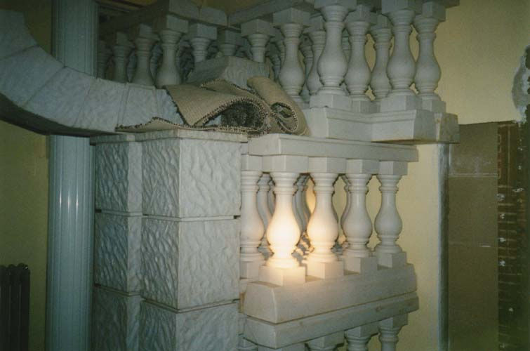

Upper Floors of the House of Nightmares...

The first floor above the basement is also occupied by the haunted house. This is where you buy your tickets and stand in line, waiting to be admitted one group at a time. The walls are covered with spraypainted horror scenes done in neon colors so they show up under the black light they usually have up here.

Most of the rooms on this level are taken up by extras from the haunted house, like the plastic pillars you see above. Those are probably put outside in October; I don't remember specifically.

As you climb higher, however, the haunted house disappears and you start to get a feel for what the building was previously: a Christian college. The many dorm-like rooms attached to wide hallways still contain ratty mattresses and wardrobes. There are even communal bathrooms with shower stalls side-by-side. The upper levels must have been where the students lived. Classes might have been held on the lower levels; they've been changed so much it's hard to say for sure.

The fourth floor was especially difficult to access. The stairwells had been blocked with elaborate, heavy wooden obstructions so you couldn't go any higher. I still have not met a door Hoss could not get past. This time he hauled it back and we slid by. The fourth floor turned out to be the level with the most artifacts from the Mt. Vernon Bible College.

In a hallway on the fourth floor we saw a hatch in the ceiling and pulled down the accordion staircase. It led up into the pitch blackness of the attic. To visit the attic, click the photo below.

CONTINUE...
BACK